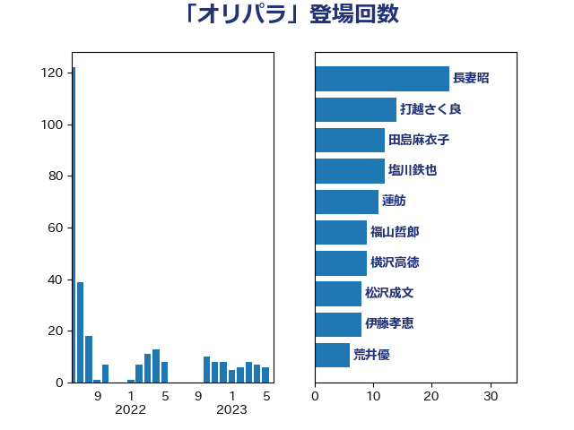

単語「オリパラ」

| 長妻昭 | 立憲民主党 | 23 回 |
| 打越さく良 | 立憲民主党 | 14 回 |
| 田島麻衣子 | 立憲民主党 | 12 回 |
| 塩川鉄也 | 日本共産党 | 12 回 |
| 蓮舫 | 立憲民主党 | 11 回 |
| 福山哲郎 | 立憲民主党 | 9 回 |
| 横沢高徳 | 立憲民主党 | 9 回 |
| 松沢成文 | 日本維新の会 | 8 回 |
| 伊藤孝恵 | 国民民主党 | 8 回 |
| 荒井優 | 立憲民主党 | 6 回 |
| 永岡桂子 | 自由民主党 | 6 回 |
| 吉川元 | 立憲民主党 | 6 回 |
| 自見はなこ | 自由民主党 | 5 回 |
| 宮本徹 | 日本共産党 | 5 回 |
| 古屋範子 | 公明党 | 5 回 |
| 石川大我 | 立憲民主党 | 4 回 |
| 西村康稔 | 自由民主党 | 3 回 |
| 柚木道義 | 立憲民主党 | 3 回 |
| 岸田文雄 | 自由民主党 | 3 回 |
| 山添拓 | 日本共産党 | 3 回 |
| 吉良よし子 | 日本共産党 | 3 回 |
| 倉林明子 | 日本共産党 | 3 回 |
| 丸川珠代 | 自由民主党 | 3 回 |
| 田村まみ | 国民民主党 | 2 回 |
| 牧義夫 | 立憲民主党 | 2 回 |
| 森本真治 | 立憲民主党 | 2 回 |
| 森山浩行 | 立憲民主党 | 2 回 |
| 柳本顕 | 自由民主党 | 2 回 |
| 東徹 | 日本維新の会 | 2 回 |
| 杉尾秀哉 | 立憲民主党 | 2 回 |
| 末松信介 | 自由民主党 | 2 回 |
| 平将明 | 自由民主党 | 2 回 |
| 高階恵美子 | 自由民主党 | 1 回 |
| 青山周平 | 自由民主党 | 1 回 |
| 鎌田さゆり | 立憲民主党 | 1 回 |
| 西村智奈美 | 立憲民主党 | 1 回 |
| 藤田文武 | 日本維新の会 | 1 回 |
| 竹谷とし子 | 公明党 | 1 回 |
| 稲富修二 | 立憲民主党 | 1 回 |
| 福島みずほ | 社会民主党 | 1 回 |
| 石橋通宏 | 立憲民主党 | 1 回 |
| 石原正敬 | 自由民主党 | 1 回 |
| 田村憲久 | 自由民主党 | 1 回 |
| 片山さつき | 自由民主党 | 1 回 |
| 池田佳隆 | 自由民主党 | 1 回 |
| 梅村みずほ | 日本維新の会 | 1 回 |
| 柴田巧 | 日本維新の会 | 1 回 |
| 朝日健太郎 | 自由民主党 | 1 回 |
| 斎藤嘉隆 | 立憲民主党 | 1 回 |
| 志位和夫 | 日本共産党 | 1 回 |
| 徳永エリ | 立憲民主党 | 1 回 |
| 山井和則 | 立憲民主党 | 1 回 |
| 小泉進次郎 | 自由民主党 | 1 回 |
| 大西健介 | 立憲民主党 | 1 回 |
| 塩田博昭 | 公明党 | 1 回 |
| 堀内詔子 | 自由民主党 | 1 回 |
| 和田政宗 | 自由民主党 | 1 回 |
| 丹羽秀樹 | 自由民主党 | 1 回 |
| 中島克仁 | 立憲民主党 | 1 回 |